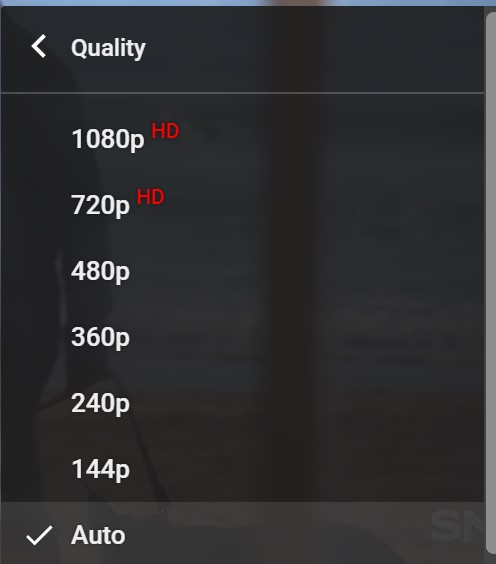

main page of youtube

This report describes the conformance of YOUTUBE
with W3C’s Web Content Accessibility Guidelines (WCAG). The
review process is described in Section 5 below and is based
on evaluation described in Accessibility Evaluation Resources.
Based on this evaluation, the YOUTUBE meets WCAG 2.1, Conformance Level AA. Detailed
review results are available in Section 6 below. Resources for
follow-up study are listed in Section 7 below. Feedback on this
evaluation is welcome.
Conformance evaluation of web accessibility requires a combination of semi-automated evaluation tools and manual evaluation by an experienced reviewer. The evaluation results in this report are based on evaluation conducted on the following date: 2/24/2020. The website may have changed since that time.
Youtube is a platform that allows its users to upload, watch, comment and share videos.
support up to 165 language
2/24/2020
Name: Edwin
School: Sacramento City School
language: English
1-Every thumbnail has a topic and description underneith for the people not able to load the picture
Live Caption, including auto caption and prerecorded captions


Allows keyboard shortcut. Users can pause videos by pressing SPACE on the keyboard

Youtube autometically set the dault language depends on the regions of user's location. Users can also change the language manually.

Users are able to comment under videos. Before commenting, users are require to sign in to a personally account.

Allow users to adjust the quality of video. People with slow internet connection are benefitted.
1-Auto caption is not avaible for all Asian Language
2-Sometimes not able to identify the language of videos. For example: Giving non-sense English caption for Spanish videos
Web Content Accessibility Guidelines (WCAG) Overview
https://www.w3.org/WAI/intro/wcag
Web Content Accessibility Guidelines 2.1
https://www.w3.org/TR/WCAG21/
Techniques for WCAG 2.1
http://www.w3.org/WAI/eval/
Web Accessibility Evaluation Tools List
https://www.w3.org/WAI/ER/tools/
Using Combined Expertise to Evaluate Web Accessibility
https://www.w3.org/WAI/eval/reviewteams